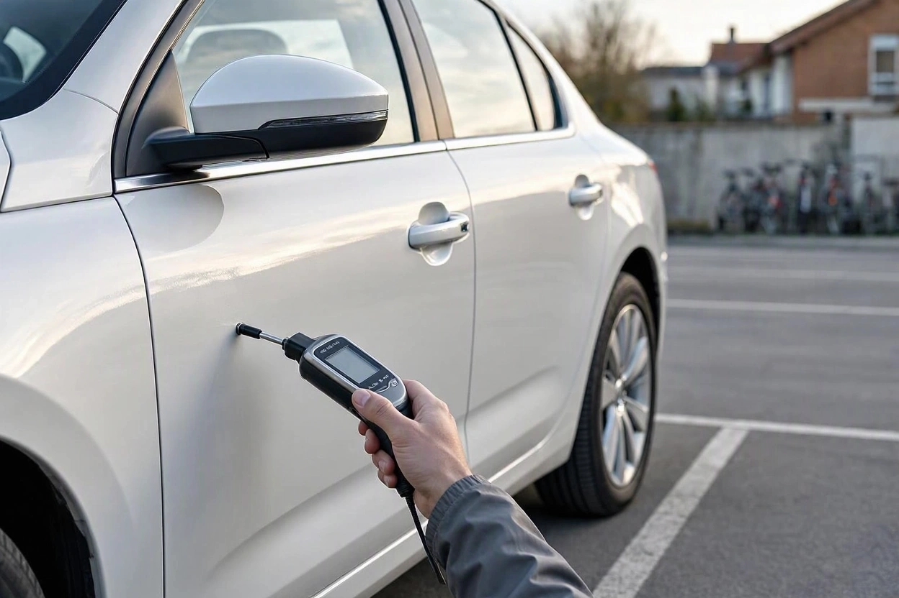
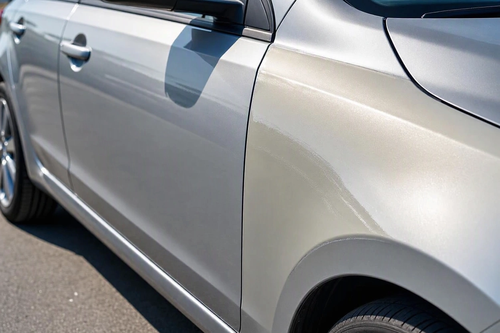
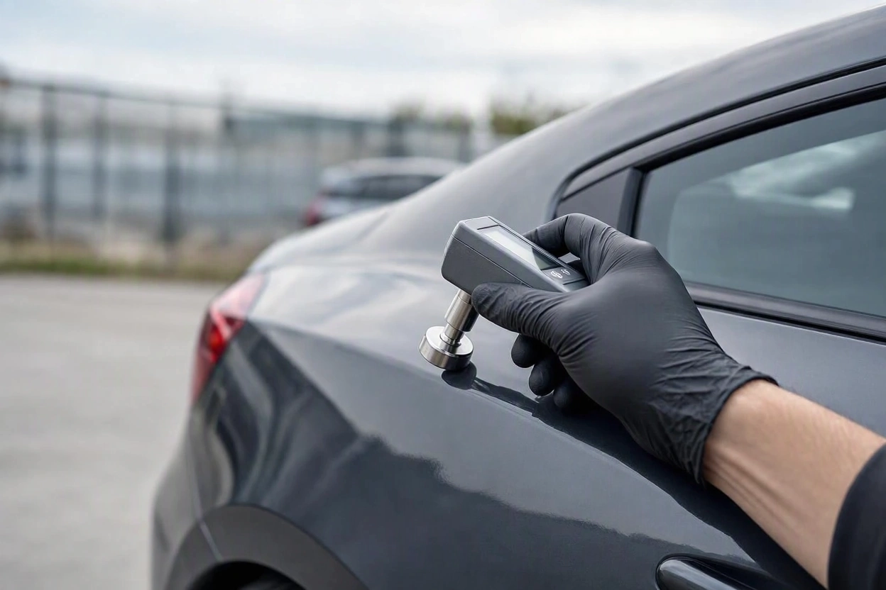
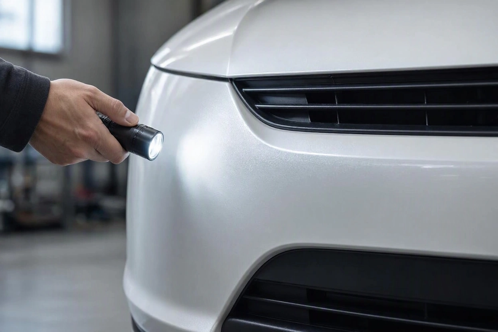
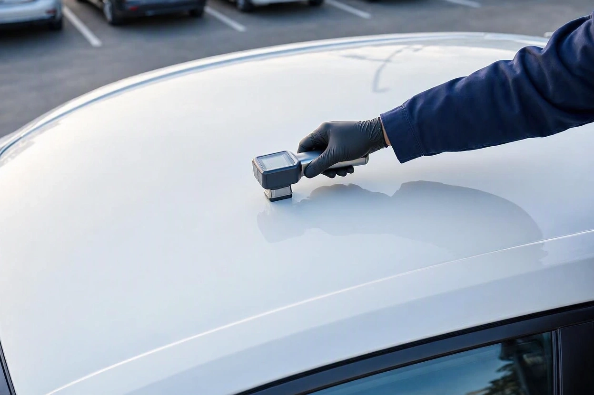

کارشناسی رنگ خودرو چیست؟ انواع رنگ شدگی و کار ضخامت سنج
فرض کنید جلوی یک پژو پارس سفید ایستادهاید. آگهی نوشته «بدون رنگ»، بدنه زیر نور آفتاب براق است و فروشنده هم با اطمینان میگوید فقط یک خطوخش جزئی داشته. شما اما نمیدانید آن خطوخش جزئی یک لکه کوچک بوده یا یک درب کامل که بتونه خورده و دوباره رنگ شده است.
جواب این سؤال با نگاه کردن به دست نمیآید. کارشناسی رنگ خودرو دقیقاً برای همین انجام میشود: مشخص کند کدام قطعه رنگ اصلی دارد، کدام رنگ شده و زیر رنگ چه اتفاقی افتاده است. در این راهنمای مجموعه کارماچک توضیح میدهیم کارشناس رنگ دقیقاً چه چیزی را بررسی میکند، ضخامتسنج چطور کار میکند و چرا عدد این دستگاه بهتنهایی حکم نهایی نیست.
کارشناسی رنگ خودرو یعنی بررسی قطعهبهقطعه بدنه برای تشخیص رنگ اصلی کارخانه، لکهگیری، رنگ کامل قطعه، بتونهکاری و قطعه تعویضی. ابزار اصلی این کار ضخامتسنج رنگ است که ضخامت لایه رنگ را روی ورق فلزی میسنجد. نتیجه درست از مقایسه عددها در کل بدنه، بررسی چشمی زیر نور و دیدن پیچها و درزها به دست میآید.
خلاصه در یک دقیقه
- کارشناسی رنگ فقط گفتن «رنگ دارد یا ندارد» نیست؛ محل، وسعت و عمق رنگشدگی مهمتر از خود رنگ است.
- ضخامتسنج روی ورق فولادی و آلومینیومی کار میکند، اما سپر و قطعات پلاستیکی را با دستگاههای معمول نمیشود سنجید.
- عدد ضخامت را باید با قطعههای سالم همان خودرو مقایسه کرد، نه با یک عدد ثابت که برای همه ماشینها درست باشد.
- عدد خیلی بالا معمولاً نشانه بتونه است و احتمال صافکاری جدی یا ضربه عمیق را بالا میبرد.
- قطعه تعویضی با رنگ کارخانه ممکن است عدد عادی بدهد؛ برای همین پیچها، درزها و آببندیها هم باید دیده شوند.
کارشناسی رنگ خودرو دقیقا چه چیزی را بررسی می کند؟
کارشناسی رنگ خودرو یعنی کارشناس تکتک قطعات بدنه را بررسی میکند تا بفهمد کدام قطعه همان رنگ کارخانه را دارد و کدام بعد از تولید دستکاری شده است. خروجی این کار معمولاً یک نقشه از بدنه است که روی آن مشخص شده هر قطعه چه وضعی دارد.
در عمل، کارشناس به چهار سؤال جواب میدهد:
- کدام قطعهها رنگ شدهاند و رنگ کل قطعه را گرفته یا فقط یک لکه است؟
- زیر رنگ، بتونه یا صافکاری انجام شده یا فقط سطح رنگ ترمیم شده است؟
- آیا قطعهای تعویض شده است؟
- الگوی رنگشدگی به یک ضربه مشخص اشاره دارد یا به رنگ پراکنده و سلیقهای؟
سؤال آخر از بقیه مهمتر است. دو گلگیر رنگشده در جلوی خودرو، کنار یک کاپوت تعویضی، داستان متفاوتی از دو گلگیر رنگشده در دو طرف خودرو تعریف میکند. اولی احتمال ضربه از جلو را مطرح میکند و باید سینی و شاسی هم دیده شود. برای همین کارشناسی رنگ معمولاً جدا از بدنه انجام نمیشود و بخشی از کارشناسی فنی و بدنه خودرو است.
انواع رنگ شدگی خودرو در یک نگاه
در بازار خودروی ایران، وضعیت رنگ با چند اصطلاح ثابت توصیف میشود. دانستن معنی دقیق آنها کمک میکند حرف فروشنده و گزارش کارشناس را درست بفهمید.

| اصطلاح بازار | یعنی چه | اهمیت در معامله |
|---|---|---|
| بدون رنگ | همه قطعات رنگ کارخانه دارند | بهترین وضعیت؛ باید با بررسی تأیید شود |
| لکه رنگ | بخش کوچکی از یک قطعه ترمیم شده | معمولاً کماهمیت، اگر بتونه زیادی زیر آن نباشد |
| یک یا چند قطعه رنگ | کل یک قطعه مثل درب یا گلگیر رنگ شده | بسته به محل و دلیل رنگ، اثر متوسط تا زیاد |
| دور رنگ | بیشتر قطعات بیرونی رنگ شدهاند ولی داخل درها و صندوق اصلی است | اثر جدی روی قیمت؛ دلیل آن باید روشن شود |
| تمام رنگ | بدنه بیرونی و داخلی، از جمله داخل درها و موتورخانه رنگ شده | پرریسکترین حالت؛ احتمال تصادف یا آسیب گسترده |
| صافکاری بدون رنگ | فرورفتگی بدون آسیب به رنگ، با ابزار صاف شده | معمولاً اثر کمی دارد و با ضخامتسنج دیده نمیشود |
| تعویضی | قطعه اصلی برداشته شده و قطعه دیگری نصب شده | بستگی به قطعه دارد؛ تعویض سقف یا ستون بسیار جدی است |
اگر میخواهید هر کدام از این سطحها را با جزئیات بیشتر بشناسید، راهنمای انواع رنگشدگی خودرو از لکه رنگ تا تمامرنگ را بخوانید. در ادامه این مقاله روی خود فرایند کارشناسی و دستگاه ضخامتسنج تمرکز میکنیم.
ضخامت سنج رنگ چطور کار می کند؟
ضخامتسنج رنگ یک دستگاه دستی است که سر آن روی بدنه گذاشته میشود و فاصله پروب تا ورق فلزی زیر رنگ را اندازه میگیرد. هرچه لایههای روی فلز ضخیمتر باشند، عدد بزرگتری نمایش داده میشود. واحد این عدد معمولاً میکرون است.

بیشتر ضخامتسنجهای خودرویی از دو روش استفاده میکنند:
- روش مغناطیسی: برای ورقهای فولادی که بیشتر بدنه خودروهای رایج ایران از آن ساخته شده است. دستگاه تغییر میدان مغناطیسی میان پروب و ورق آهنی را میسنجد. این روش در استاندارد ISO 2178 تعریف شده است.
- روش جریان گردابی: برای قطعات آلومینیومی که در بعضی خودروهای وارداتی، مثلاً در کاپوت یا درب صندوق، دیده میشوند. این روش برای فلزهای غیرآهنی به کار میرود.
دستگاههای دوکاره هر دو حالت را دارند و نوع فلز را خودشان تشخیص میدهند. توضیح فنی این دو روش در راهنمای اندازهگیری ضخامت پوشش DeFelsko آمده است. برای خریدار، نکته عملی این است: دستگاه ارزان و تکحالته روی قطعه آلومینیومی ممکن است اصلاً عدد ندهد یا عدد اشتباه نشان بدهد.
عددهای ضخامت سنج را چطور بخوانیم؟
مهمترین قاعده این است: عدد ضخامت را با بقیه قطعات همان خودرو مقایسه کنید. ضخامت رنگ کارخانه بین برندها، مدلها و حتی سالهای تولید یک مدل فرق دارد. سقف و قطعاتی که کمتر آسیب میبینند معمولاً نقطه مرجع خوبی برای مقایسهاند.
الگوهای رایج تقریباً اینطورند:
| الگوی عدد | تفسیر محتمل | قدم بعدی |
|---|---|---|
| نزدیک به قطعات مرجع و یکنواخت | رنگ کارخانه، یا قطعه تعویضی با رنگ کارخانه | پیچها و درزهای قطعه را ببینید |
| کمی بالاتر و یکنواخت در کل قطعه | رنگ کامل قطعه بدون بتونه زیاد | دلیل رنگ و قطعات اطراف را بررسی کنید |
| بالا فقط در یک ناحیه کوچک | لکهگیری یا ترمیم موضعی | مساحت و عمق ناحیه را مشخص کنید |
| چند برابر قطعات مرجع | احتمال زیاد بتونه و صافکاری جدی | ضربه عمیق را جدی بگیرید و سازه زیر قطعه را ببینید |
| پایینتر از قطعات مرجع | پولیش سنگین یا سابخوردگی رنگ | معمولاً مشکل سازهای نیست، ولی دوام رنگ را بررسی کنید |
این جدول راهنمای خواندن عددهاست، نه تشخیص قطعی. ممکن است کارخانه در خط تولید هم بخشی را ترمیم کرده باشد و عدد آن قطعه کمی متفاوت شود. برای همین کارشناس باتجربه از یک عدد عجیب نتیجه نمیگیرد و چند نقطه از همان قطعه را میسنجد.
پیش از معامله، وضعیت رنگ و بدنه را روشن کنید
اگر عددهای ضخامتسنج یا حرف فروشنده درباره رنگ قانعتان نکرده، بررسی تخصصی بدنه میتواند نشان دهد رنگشدگی سطحی است یا پای ضربه جدی در میان است.
ثبت درخواست کارشناسیضخامت سنج کجا جواب نمی دهد؟
ضخامتسنج ابزار خوبی است، ولی چند محدودیت روشن دارد که بیتوجهی به آنها خریدار را به اشتباه میاندازد.

- سپرها و قطعات پلاستیکی: دستگاههای مغناطیسی و گردابی زیر پلاستیک فلزی پیدا نمیکنند. این قطعات با چشم، نور و دستگاههای خاص فراصوتی بررسی میشوند.
- قطعه تعویضی با رنگ کارخانه: اگر قطعه نو با رنگ کارخانه نصب شده باشد، عدد آن طبیعی است. سرنخ را باید در رنگخوردگی پیچها، فاصله درزها و آببندی لبهها پیدا کرد.
- صافکاری بدون رنگ: وقتی فرورفتگی بدون آسیب به رنگ صاف شده باشد، عدد تغییری نمیکند.
- دستگاه کالیبرهنشده: دستگاهی که با صفحه مرجع تنظیم نشده، ممکن است همه عددها را کمی جابهجا نشان دهد.
- سطحهای خمیده و لبهها: اندازهگیری روی لبه قطعه یا انحنای تند، عدد غیرواقعی میدهد.
نتیجه عملی ساده است: ضخامتسنج بخشی از کارشناسی رنگ است، نه کل آن. کارشناسی که فقط دستگاه را روی بدنه بکشد و عدد بخواند، نیمی از کار را انجام داده است.
کارشناسی رنگ مرحله به مرحله
کارشناسی رنگ اصولی ترتیب مشخصی دارد. اگر خودتان پیش از مراجعه به کارشناس خودرو را میبینید، همین ترتیب کمک میکند چیزی از قلم نیفتد.

- مرحله اول:خودرو را در نور روز یا زیر نور یکنواخت ببینید. بدنه خیس یا تازه واکسخورده، اختلاف رنگ و موج را پنهان میکند.
- مرحله دوم:از فاصله چند قدمی و از زاویه کج، طول بدنه را نگاه کنید. موج، پوستپرتقالیبودن رنگ و اختلاف سایه دو قطعه کنار هم از این زاویه بهتر پیدا میشود.
- مرحله سوم:عدد مرجع را از سقف و قطعات کمآسیب بگیرید و در چند نقطه بسنجید.
- مرحله چهارم:هر قطعه را در چند نقطه اندازه بگیرید: وسط، نزدیک لبهها و محلهای رایج ضربه. یک عدد برای کل قطعه کافی نیست.
- مرحله پنجم:داخل درها، زیر کاپوت و دور صندوق را ببینید. رنگخوردگی این بخشها مرز میان دور رنگ و تمام رنگ را مشخص میکند.
- مرحله ششم:پیچهای گلگیر، لولای درها و کاپوت را بررسی کنید. خط آچار یا رنگ روی پیچ نشان میدهد قطعه باز شده است.
- مرحله هفتم:الگوی کلی را کنار هم بگذارید. اگر رنگشدگی در یک گوشه خودرو متمرکز است، شاسی و سینی همان سمت باید جداگانه بررسی شوند.
اشتباه های رایج خریدارها در بررسی رنگ
خیلی از خریدارها این بخش را نادیده میگیرند و فقط دنبال یک کلمه هستند: «رنگ دارد» یا «ندارد». چند اشتباه رایج در این مرحله:
- اعتماد به ضخامتسنج فروشنده یا نمایشگاه، بدون اینکه بدانید دستگاه کالیبره است یا نه.
- نادیدهگرفتن سپرها، چون «ضخامتسنج رویش کار نمیکند».
- بیتوجهی به قطعه تعویضی، فقط چون عدد ضخامت آن عادی بوده است.
- یکسان دیدن لکه رنگ کوچک روی درب با رنگ گلگیر و سینی جلو در کنار هم.
- بررسی خودرو در شب یا زیر باران، که اختلاف رنگ را تقریباً نامرئی میکند.
اثر رنگشدگی روی قیمت به محل و دلیل آن بستگی دارد. اگر سؤال اصلیتان این است که با این وضع رنگ خرید منطقی است یا نه، مقاله ارزش خرید خودرو رنگشده همین موضوع را باز میکند. برای تخمین عدد منصفانه معامله هم میتوانید از قیمتگذاری خودرو کمک بگیرید.
چه زمانی کارشناسی رنگ را به کارشناس بسپاریم؟
بررسی شخصی برای غربال اولیه مفید است، اما در این موقعیتها کارشناسی تخصصی لازم است: وقتی عدد یک قطعه چند برابر بقیه است، وقتی رنگشدگی در یک گوشه خودرو جمع شده، وقتی احتمال تعویض قطعه وجود دارد، یا وقتی خودرو آلومینیومی یا وارداتی است و دستگاه شما همه حالتها را پوشش نمیدهد.
کارماچک بهعنوان ارائهدهنده خدمات کارشناسی خودرو در ایران، رنگ و بدنه را همراه با شاسی و بخشهای فنی بررسی میکند. ما فقط ایراد خودرو را شناسایی نمیکنیم؛ اثر آن روی هزینه تعمیر و ارزش واقعی معامله را هم مشخص میکنیم. با این حال، هیچ کارشناسی رنگ نمیتواند همه سابقه یک خودرو را با قطعیت کامل بازسازی کند و گزارش خوب، حد اطمینان هر نتیجه را هم میگوید.
جمع بندی
کارشناسی رنگ خودرو یعنی خواندن داستان بدنه، نه فقط شمردن قطعههای رنگشده. ضخامتسنج ابزار اصلی این کار است، اما عدد آن فقط وقتی معنا دارد که با قطعات مرجع همان خودرو مقایسه شود و کنار بررسی چشمی، پیچها، درزها و محدودیتهای دستگاه قرار بگیرد. لکه رنگ کوچک با بتونه سنگین در گلگیر جلو فرق جدی دارد و این تفاوت در قیمت و ایمنی خودرو اثر میگذارد.
قبل از خرید، نقشه رنگ و بدنه را داشته باشید
اگر خودرو را پسندیدهاید ولی درباره رنگ و بدنه آن مطمئن نیستید، یک بررسی دقیق پیش از معامله تصویر روشنتری از وضعیت خودرو و ارزش آن به شما میدهد.
رزرو کارشناسی خودروسؤالات متداول
آیا ضخامتسنج میتواند رنگشدگی را صددرصد تشخیص دهد؟
نه. ضخامتسنج فقط ضخامت لایههای روی فلز را میسنجد و رنگشدگی را از روی اختلاف عدد نشان میدهد. قطعه تعویضی با رنگ کارخانه، صافکاری بدون رنگ و قطعات پلاستیکی با این دستگاه بهدرستی تشخیص داده نمیشوند. برای نتیجه قابل اعتماد، عدد دستگاه باید کنار بررسی چشمی و بررسی پیچها و درزها تفسیر شود.
عدد مجاز ضخامت رنگ خودرو چقدر است؟
یک عدد ثابت و مشترک برای همه خودروها وجود ندارد. ضخامت رنگ کارخانه بین برندها، مدلها و حتی سالهای تولید فرق میکند. روش درست این است که چند نقطه از سقف و قطعات کمآسیب همان خودرو را بهعنوان مرجع بسنجید و بقیه قطعات را با آن مقایسه کنید. اختلاف زیاد، بهویژه عدد چند برابر، نیاز به بررسی دقیقتر دارد.
چرا ضخامتسنج روی سپر عدد نشان نمیدهد؟
چون بیشتر ضخامتسنجهای خودرویی با میدان مغناطیسی یا جریان گردابی کار میکنند و به فلز زیر رنگ نیاز دارند. سپرهای امروزی پلاستیکیاند و فلزی زیرشان نیست. رنگ سپر را با نور زاویهدار، مقایسه سایه رنگ با بدنه و بررسی لبهها میسنجند؛ دستگاههای فراصوتی هم برای این کار وجود دارند ولی کمتر در دسترساند.
عدد خیلی بالای ضخامتسنج روی یک قطعه یعنی چه؟
عددی که چند برابر قطعات مرجع باشد، معمولاً نشان میدهد زیر رنگ بتونه زده شده است. بتونه زیاد یعنی ورق آسیب جدیتری دیده و صافکاری شده است. این نشانه بهتنهایی آسیب سازه را ثابت نمیکند، اما دلیل خوبی است که شاسی، سینی و قطعات اطراف همان ناحیه با دقت بررسی شوند.
آیا خودم میتوانم با ضخامتسنج کارشناسی رنگ انجام دهم؟
برای غربال اولیه بله، به شرط اینکه دستگاه کالیبره باشد و روش مقایسه با قطعات مرجع را رعایت کنید. اما تشخیص تعویض قطعه، تفسیر الگوی ضربه و ارتباط رنگشدگی با سلامت شاسی تجربه میخواهد. اگر خرید برایتان مهم است، نتیجه بررسی شخصی را با کارشناسی خودرو قبل از خرید تکمیل کنید.
کارشناسی رنگ خودرو چقدر طول میکشد؟
بررسی رنگ و بدنه یک سواری معمولی، اگر با دقت و قطعهبهقطعه انجام شود، زمان قابل توجهی میبرد و معمولاً بخشی از یک کارشناسی کاملتر است. زمان دقیق به وضعیت خودرو، تعداد قطعات مشکوک و نیاز به بررسی شاسی بستگی دارد. کارشناسی که در چند دقیقه کل بدنه را «بیرنگ» اعلام میکند، احتمالاً جزئیات را از قلم انداخته است.